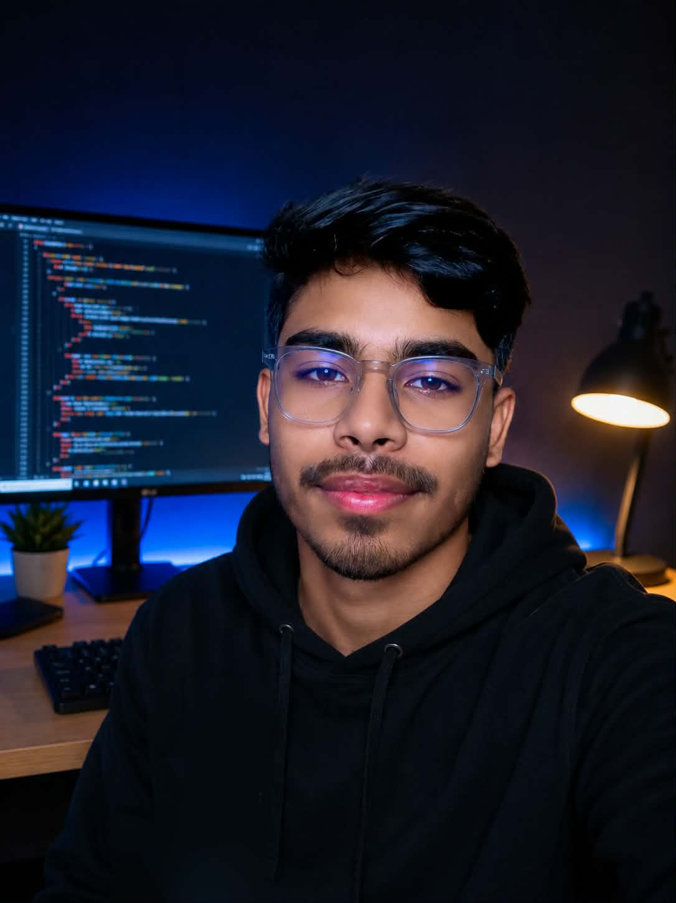

HTML · CSS · JavaScript
I am a passionate Front-End Web Developer who enjoys turning ideas into modern, responsive, and user-friendly websites. I have hands-on experience with HTML, CSS, JavaScript, React, Tailwind CSS, Git, and GitHub, along with a strong understanding of responsive web design.
My projects